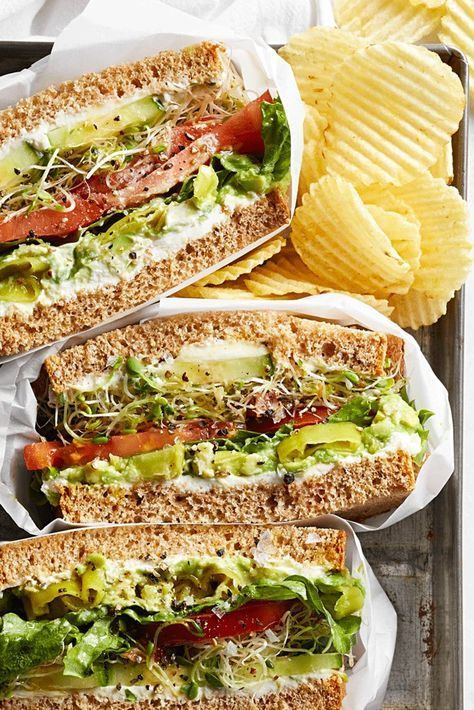

Loaded Cucumber Sammies

Description
Cucumber sandwiches are always so good but so small. So, lets make it loaded.
Ingredients
- 2 Thick slices of Multi-grain bread
- 2 tbsp Cream Cheese
- 2 tbsp Alfalfa sprouts
- 1/2 Avocado
- 6 slices Cucumber
- 1 Leaf Lettuce
- 1 oz Pepperoncini
- 1 Tomato
- 1 tsp Olive oil
- 1 tsp Red wine vinegar
Steps
- Spread 1 tbsp cream cheese on each slice of bread.
- On one slice spread out the cucumber slices in a single layer.
- Cover the cucumber with the sprouts, then sprinkle with oil and vinegar.
- Layer on the tomato slices, lettuce, and pepperoncini.
- Spread other slice of bread with the mashed avocado.
- Finally close the sammie and enjoy!